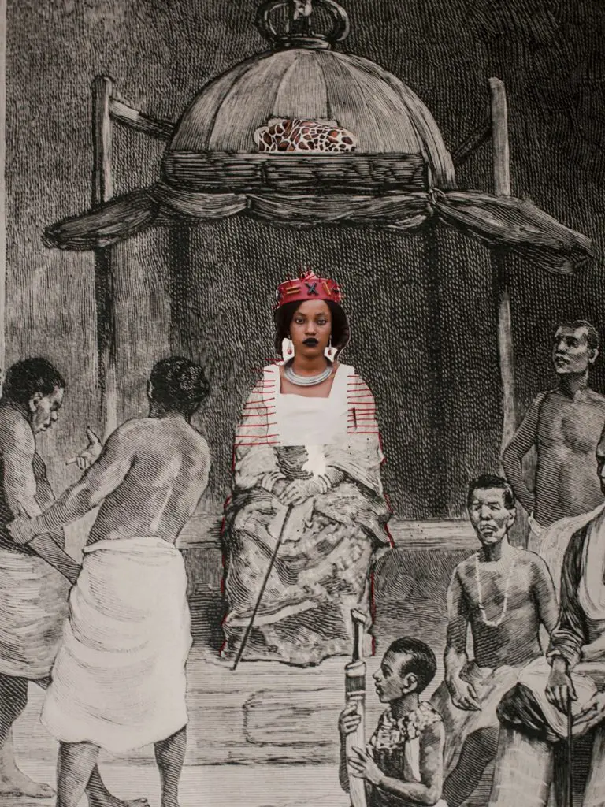
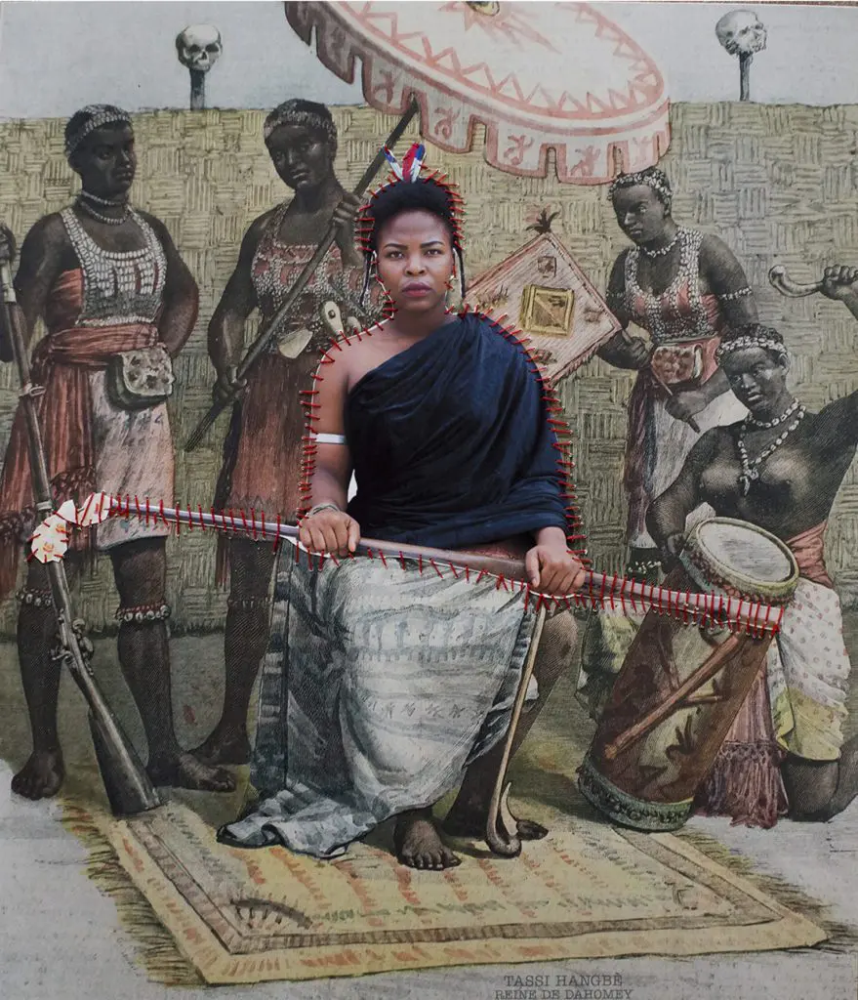
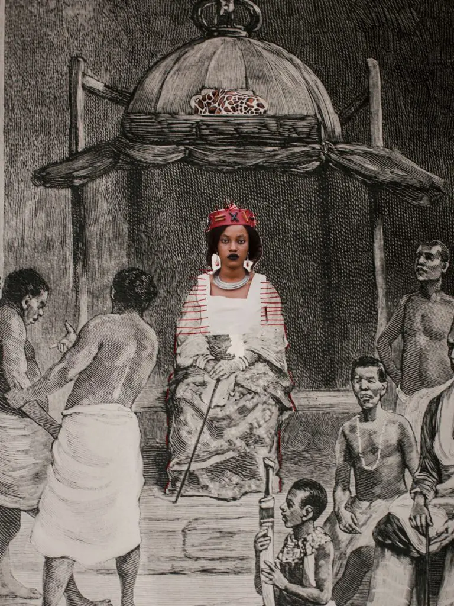
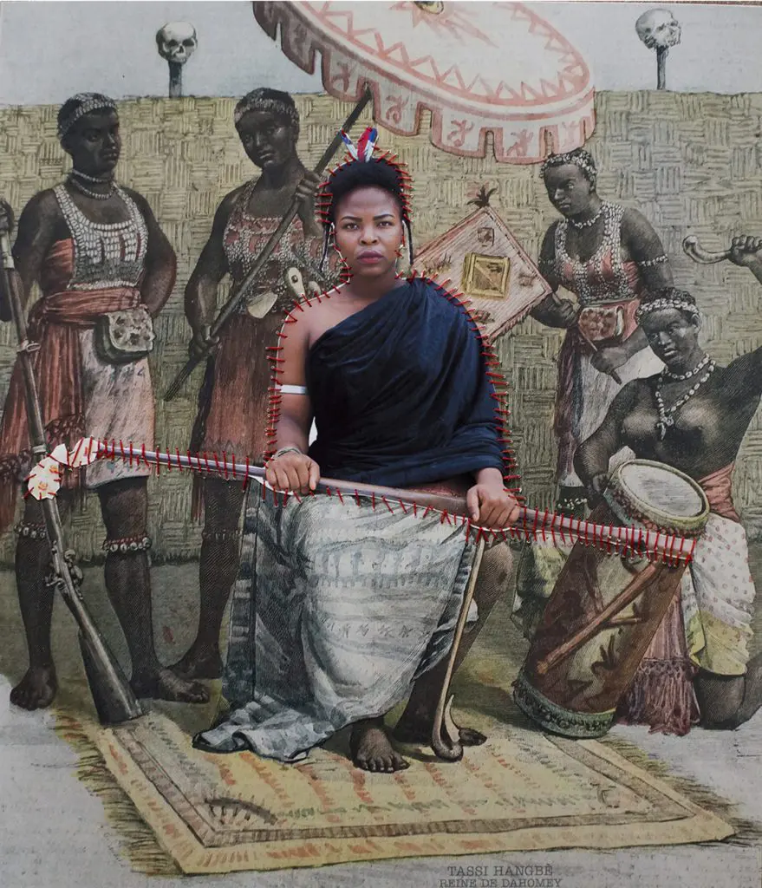
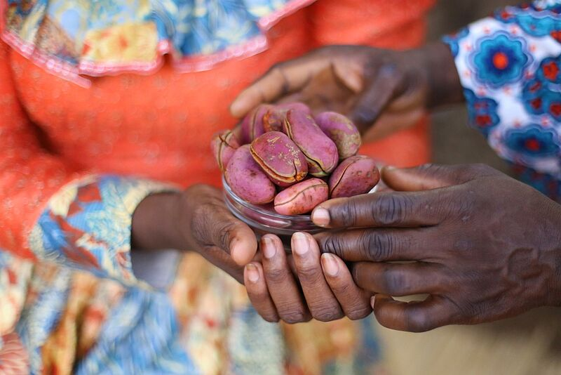
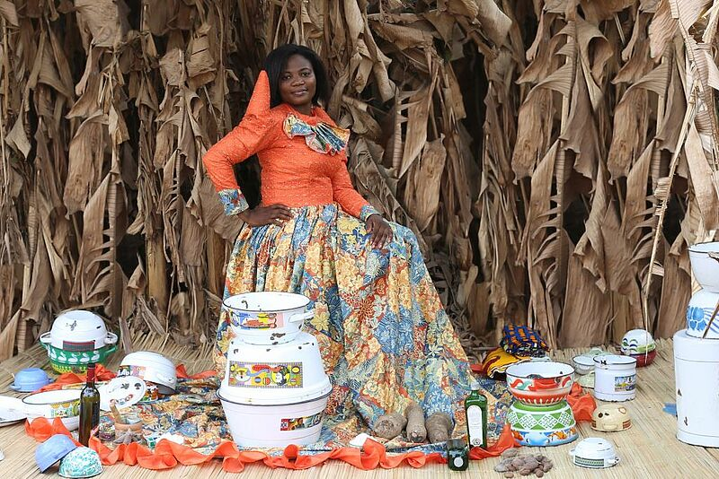
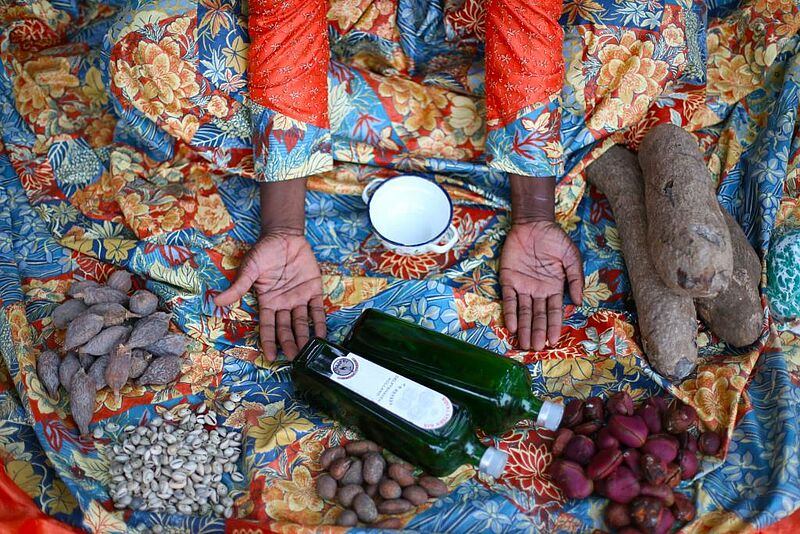

AGBARA WOMEN
L'exposition "AGBARA WOMEN" du photographe béninois Ishola Akpo,
a été présentée au Musée de la Fondation Zinsou à Ouidah en 2020.
Cet hommage à la royauté africaine féminine vise à réparer l'injustice historique envers les reines
africaines, souvent oubliées ou reléguées dans l'ombre. Ishola Akpo, artiste multimédia,
a utilisé divers médias pour donner vie à ses créations.
Les photocollages, résultat d'une recherche approfondie dans les archives et la culture yoruba,
retracent l'histoire de ces femmes puissantes.



Les mariés de notre époque
La série photographique "Les mariés de notre époque"
a été réalisée dans le cadre des résidences de Photoquai du Musée du Quai Branly en 2015.
Ishola Akpo a utilisé des objets de la dot de sa grand-mère et des créations
d'artisans locaux au Bénin et au Nigéria pour sa mise en scène photographique.
La série photographique explore la thématique de la dot, ainsi que les évolutions sociales
qui en découlent.
Ces images suscitent une réflexion sur la signification culturelle
de la dot, les enjeux liés à sa réappropriation par les jeunes générations,
ainsi que sur la redéfinition du statut de la femme dans la société béninoise